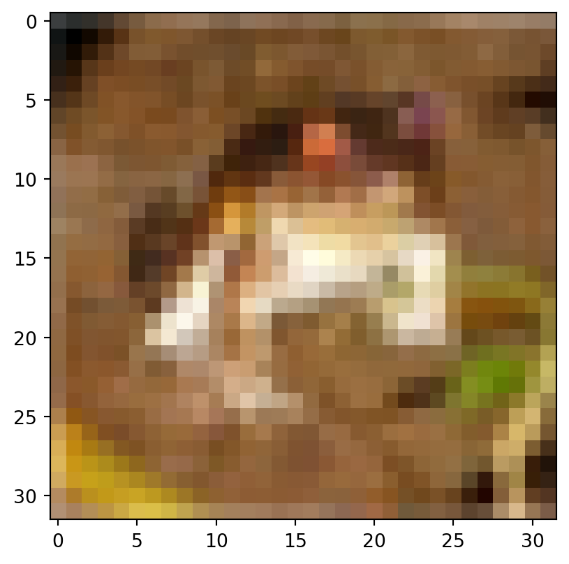
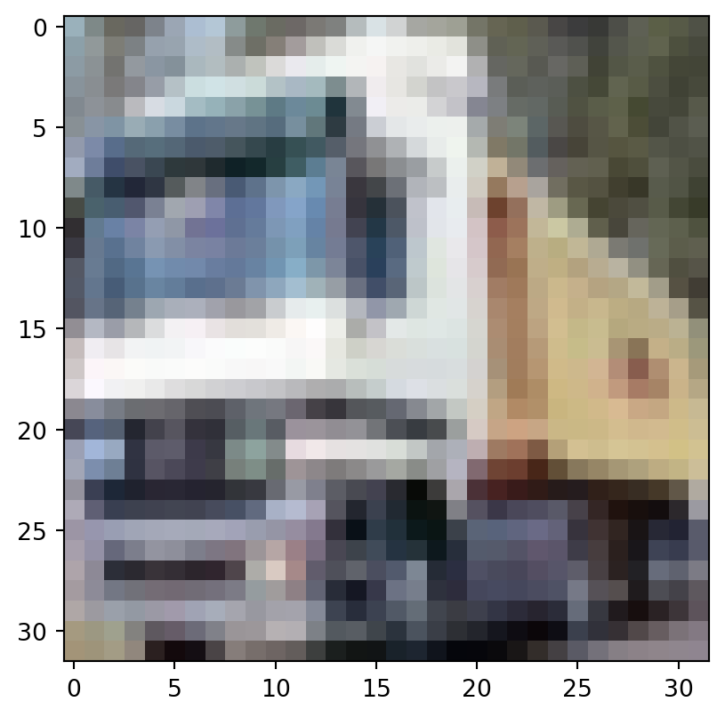
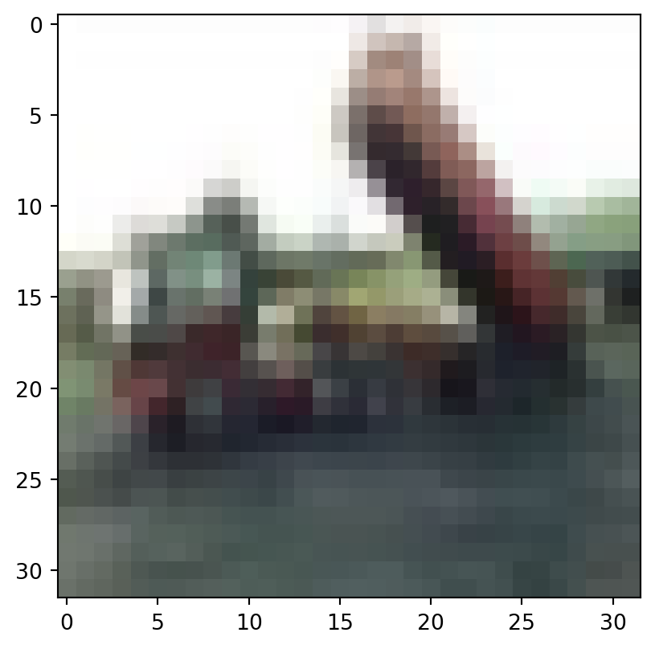

from tensorflow import keras
import tensorflow_hub as hub
import matplotlib.pyplot as pltModelos pré-treinados
Neste exemplo, ao invés de treinarmos um modelo convolucional do zero, como fizemos no exemplo 07, vamos usar um modelo pré treinado. Para isso usaremos o TensorFlow Hub - bibilioteca que facilita todas as etapas para usar modelos pré treinados.
A base de dados que vamos usar será o CIFAR10 que pode ser carregada no Keras com:
(x_train, y_train), (x_test, y_test) = keras.datasets.cifar10.load_data()Podemos visualizar algumas imagens: Agora podemos visualizar algumas imagens do banco de dados:
plt.imshow(x_train[0])
plt.show()
plt.imshow(x_train[1])
plt.show()
plt.imshow(x_train[2])
plt.show()


Vamos agora definir o modelo. Ponto importantes:
- Cada modelo no tfhub possui uma documentação (exemplo) que vai falar o formato esperado da imagem. No caso deste MobileNet que estamos usando é esperado que a imagem tenha cores como valores entre 0 e 1 e que a imagem tenha tamanho 224x224.
- Usamos as camadas
RescalingeResizingmudar as cores de inteiros de [1,255] em valores entre 0 e 1 e para aumentar o tamanho das imagens de 32x32 para 224x224. - Para usar o modelo pré treinado, basta passar a sua URL para a camada
hub.KerasLayer. Usamostrainable=Falsepois queremos deixar fixos os pesos deste modelo. - O modelo pré-treinado está transformando cada imagem em um vetor de tamanho 1024. Em seguida usamos uma regressão multinomial p/ classificar nas 10 classes do CIFAR10.
input = keras.layers.Input(shape=(32, 32, 3))
out = keras.layers.Rescaling(1 / 255.0)(input)
out = keras.layers.Resizing(224, 224)(out)
out = hub.KerasLayer(
handle="https://tfhub.dev/google/imagenet/mobilenet_v1_100_224/feature_vector/5",
trainable=False,
)(out)
out = keras.layers.Dropout(rate=0.2)(out)
out = keras.layers.Dense(units=10, activation="softmax")(out)2022-04-28 10:23:31.586158: I tensorflow/core/platform/cpu_feature_guard.cc:151] This TensorFlow binary is optimized with oneAPI Deep Neural Network Library (oneDNN) to use the following CPU instructions in performance-critical operations: AVX2 FMA
To enable them in other operations, rebuild TensorFlow with the appropriate compiler flags.Veja que a camada do TFHUB possui todos os pesos do MobileNet.
model = keras.Model(inputs=input, outputs=out)
model.summary()Model: "model"_________________________________________________________________ Layer (type) Output Shape Param # ================================================================= input_1 (InputLayer) [(None, 32, 32, 3)] 0 rescaling (Rescaling) (None, 32, 32, 3) 0 resizing (Resizing) (None, 224, 224, 3) 0 keras_layer (KerasLayer) (None, 1024) 3228864 dropout (Dropout) (None, 1024) 0 dense (Dense) (None, 10) 10250 =================================================================Total params: 3,239,114Trainable params: 10,250Non-trainable params: 3,228,864_________________________________________________________________Agora podemos compilar o modelo:
model.compile(
optimizer="adam",
loss=keras.losses.SparseCategoricalCrossentropy(from_logits=False),
metrics=["accuracy"],
)Estamos usando a mesma loss que usamos no exemplo anterior. Agora vamos ajustar o modelo. É esperado termos um acerto bem maior do que se tivéssemos ajustado um modelo do zero, pois o modelo pré treinado foi ajustado em banco de dados muito maiores e por isso tem bastante informação p/ agregar.
hist = model.fit(x_train, y_train, epochs=5, validation_split=0.2, verbose=2)Epoch 1/51250/1250 - 1259s - loss: 0.6180 - accuracy: 0.7867 - val_loss: 0.3967 - val_accuracy: 0.8616 - 1259s/epoch - 1s/stepEpoch 2/51250/1250 - 1133s - loss: 0.4270 - accuracy: 0.8516 - val_loss: 0.3835 - val_accuracy: 0.8634 - 1133s/epoch - 907ms/stepEpoch 3/51250/1250 - 1250s - loss: 0.4012 - accuracy: 0.8590 - val_loss: 0.3635 - val_accuracy: 0.8702 - 1250s/epoch - 1000ms/stepEpoch 4/51250/1250 - 1218s - loss: 0.3934 - accuracy: 0.8648 - val_loss: 0.3588 - val_accuracy: 0.8717 - 1218s/epoch - 974ms/stepEpoch 5/51250/1250 - 1204s - loss: 0.3822 - accuracy: 0.8676 - val_loss: 0.3640 - val_accuracy: 0.8719 - 1204s/epoch - 963ms/step